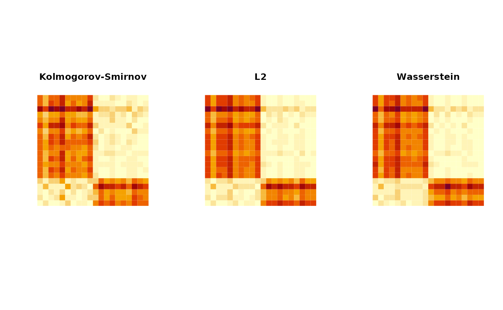

We measure distance between two sets of empirical cumulative distribution functions (ECDF). For
simplicity, we only take an input of ecdf objects from stats package.
ecdfdist2(elist1, elist2, method = c("KS", "Lp", "Wasserstein"), p = 2)
| elist1 | a length \(M\) list of |
|---|---|
| elist2 | a length \(N\) list of |
| method | name of the distance/dissimilarity measure. Case insensitive. |
| p | exponent for |
an \((M\times N)\) matrix of pairwise distances.
# \donttest{ ## toy example # first list : 10 of random and uniform distributions mylist1 = list() for (i in 1:10){ mylist1[[i]] = stats::ecdf(stats::rnorm(50, sd=2))} for (i in 11:20){mylist1[[i]] = stats::ecdf(stats::runif(50, min=-5))} # second list : 15 uniform and random distributions mylist2 = list() for (i in 1:15){ mylist2[[i]] = stats::ecdf(stats::runif(50, min=-5))} for (i in 16:30){mylist2[[i]] = stats::ecdf(stats::rnorm(50, sd=2))} ## compute Kolmogorov-Smirnov distance dm2ks = ecdfdist2(mylist1, mylist2, method="KS") dm2lp = ecdfdist2(mylist1, mylist2, method="lp") dm2wa = ecdfdist2(mylist1, mylist2, method="wasserstein") nrs = nrow(dm2ks) ## visualize opar = par(no.readonly=TRUE) par(mfrow=c(1,3), pty="s") image(dm2ks[,nrs:1], axes=FALSE, main="Kolmogorov-Smirnov") image(dm2lp[,nrs:1], axes=FALSE, main="L2") image(dm2wa[,nrs:1], axes=FALSE, main="Wasserstein")